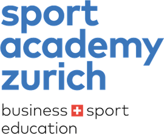

Mai 2026 · Frankfurt
Viertelfinal an der Europameisterschaft
Mein bisher stärkstes Resultat bei der Elite. Zwei Siege gegen Europas Spitze, 270 Weltranglistenpunkte.
«I will get that medal.»
EMTop 8 Europas
Fotos ansehen
Viertelfinal an der Europameisterschaft 2026. Nummer 52 der Welt. Das nächste Ziel: die Top 32.
840 Ranglistenpunkte · Stand Oktober 2026
Mit sechs Jahren stand ich zum ersten Mal auf der Matte. Heute kämpfe ich für die *Schweiz* gegen die Besten der Welt. Neben meiner KV-Lehre, mit rund zehn Trainings pro Woche. Mein Ziel ist klar: *Europa-* und *Weltmeister* werden.
Mein bisher stärkstes Resultat bei der Elite. Zwei Siege gegen Europas Spitze, 270 Weltranglistenpunkte.
«I will get that medal.»
Turniersieg im Kumite in Basel, der Stadt meines Vereins. Ganz oben auf dem Podest.
Drei Siege auf der Weltserie und mit 275 Punkten mein punktestärkstes Turnier bei der Elite.
Vier Siege an der WM und das beste Schweizer Kumite-Resultat des Turniers. Danach erstmals in den Top 10 der U21-Weltrangliste.
Nach einem gebrochenen Finger zurückgekommen und aufs Podest der Schweizermeisterschaft gekämpft.
Drei Siege in Kuala Lumpur, dazu ein Trainingslager mit dem Olympia-Team in Malaysia.
EM-Debüt und WM-Selektion bei den Erwachsenen im selben Jahr. Gleichzeitig im Junioren- und im Elite-Nationalkader.
Silber im Kata an der WSKF-Weltmeisterschaft in Japan. Der Moment, in dem alles angefangen hat.
Fotos von meinen Turnieren. Zum Vergrössern auf ein Foto tippen.
61. Europameisterschaft, Mai 2026 · Viertelfinal, Kumite −60 kg
Alle Fotos: Kjetil Waber · foto-kjetil.ch · @foto.kjetil
Die WKF-Rangliste zählt die Resultate der letzten zwei Jahre. 2026 habe ich bei der Elite so viele Punkte geholt wie in keiner Saison zuvor.
Rund zehn Trainings pro Woche, dazu Mentaltraining, Physio und eine kaufmännische Lehre. Das geht nur mit diesen Menschen und Orten.
Mein Trainingsort für die Wettkampfvorbereitung.
Hier habe ich mit sechs Jahren angefangen.
Mitglied des Elite-Nationalkaders.
Sie begleiten mich seit Jahren auf jedem Schritt.
Hat mir geholfen, unter Druck ruhig zu bleiben.
Physio Henrich, hält meinen Körper wettkampfbereit.
Kaufmann EFZ Dienstleistung und Administration, praktischer Teil bei der Securitas AG. Spitzensport und Beruf unter einem Dach.
Fotos und Videos von meinen Wettkämpfen.
 Förderungsporthilfe.ch
Förderungsporthilfe.ch
 Swiss Olympic Card Bronzeswissolympic.ch
Swiss Olympic Card Bronzeswissolympic.ch
 Ausrüstungtokaidojapan.com
Ausrüstungtokaidojapan.com
 Kampfsport-Fachhandelbudosport.ch
Markenbotschafterchirogun.ch
Kampfsport-Fachhandelbudosport.ch
Markenbotschafterchirogun.ch
 Mentaltrainingraypopoola.com
Mentaltrainingraypopoola.com
 Physiotherapiephysiohenrich.ch
Physiotherapiephysiohenrich.ch

Ausbildungsport-academy.chIch suche Partner, die den Weg in die Weltspitze mitgehen wollen. Dafür biete ich echte Sichtbarkeit und eine Geschichte, die Menschen berührt.
Follower auf Instagram, mit Wettkampf-Videos aus ganz Europa und der Welt.
Länder, in denen ich international gekämpft habe, von Georgien über Malaysia bis Mexiko.
Sauberer Sport aus Überzeugung. Jede Nahrungsergänzung prüfe ich mit Antidoping Schweiz.
Weltcups, Trainingslager und Ausrüstung kosten viel. Neben meiner Lehre ist jeder Beitrag eine echte Hilfe auf dem Weg an die Weltspitze. Mit deiner Unterstützung bist du Teil dieses Wegs.
Schreib mir deinen Namen und deine Adresse, damit ich dir die Autogrammkarte schicken kann.
Oder direkt an e.timmer@gmx.ch
Vermerk: «Gönnerclub» und dein Name.
Für Sponsoring, Medien oder Trainingskooperationen. Am schnellsten per E-Mail.
e.timmer@gmx.ch